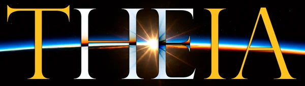
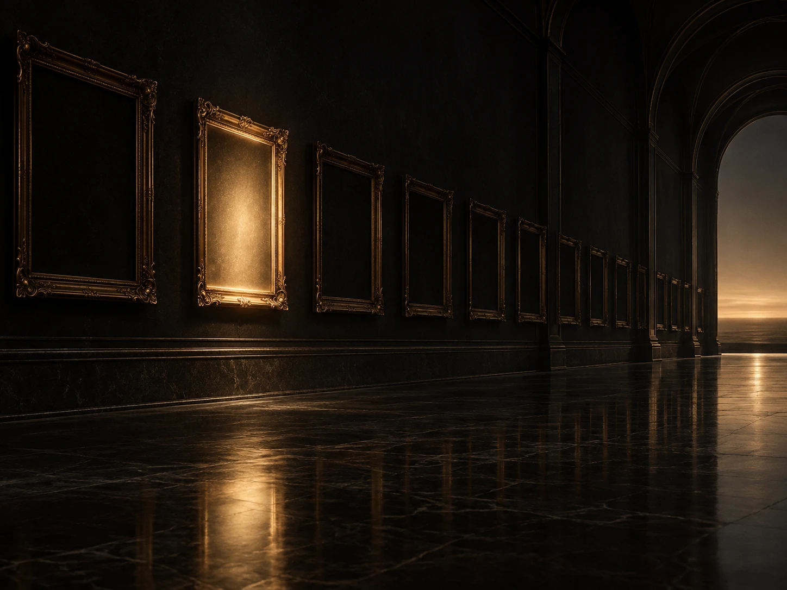
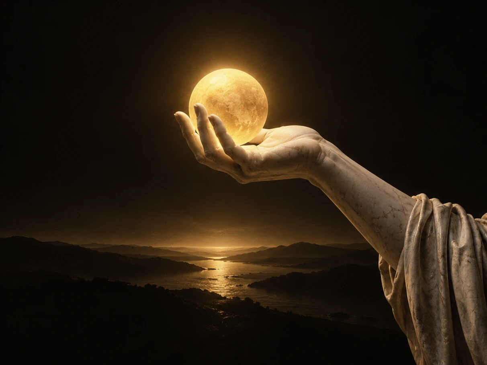

Illustration · AI-generated, not a screenshot

Your films and series. Your network. No account.
Theia turns folders of films and series into a private cinema. A small server looks after your library; a native desktop player plays it, and friends can see what you are watching. No cloud account, no telemetry, no Docker.
Young software, one maintainer. Windows x64 is the only platform validated on real hardware so far. The limits are listed below.
A real recording
Download, install, open.
Theia 3.4.0 on Windows, from the release page to the library: 1 min 44 s, no sound. The player is shown in French; Theia ships in English and French. The 4.0 installer has been rebuilt since (see below), so the install scene shows the older form.
-
Play from 0:00
Download
Get the setup for your system from the latest release page on GitHub.
-
Play from 0:19
Install
Run it in a terminal. In 3.4.0, a short form asks for the language, what this machine is for, where to keep data, the port, the network name and your film folders, then shows its plan. Nothing is written before you confirm. In 4.0 the form is one full screen that suggests your folders and reads an existing installation first; the rule that nothing is written before you confirm is unchanged.
-
Play from 0:40
Open
Start Theia Player from the entries the installer added.
-
Play from 0:56
Browse
Home, with where you stopped and what was added; a film page with its synopsis and cast; the series list and a series with its episodes; search.
-
Play from 1:17
Settings
Interface language, playback, subtitles, viewing statistics, server address and updates.
-
Play from 1:36
Profile
The profile editor, where a profile’s name and photo are changed (PNG, JPEG or WebP). The recording opens it and changes nothing.
What the recording does not show: a film playing, so it says nothing about picture or sound; any system other than Windows; a profile photo actually being changed; anything new in 4.0.
Theia 4.0
The core is done. The cinema becomes shared.
4.0 is free: the server, the library, ordinary viewing and everything new in this release cost nothing. Which later features might become paid, if any, is not decided, and it will be announced well before it happens.
-
Who’s watching?
When a server has two or more profiles, the player asks at startup which one is watching and remembers the answer. A setting turns the question off.
-
Friends
Every profile has a code. Enter a friend’s code, they accept, and you each see what the other is watching right now: a poster and a title, nothing else. No history, no library, no progress. A friend can be on your library or on another server in another house, through the built-in WireGuard tunnel, with no relay and no account.
-
Discord presence
Off by default and local to your own Discord client. Showing a title is a second, separate switch.
-
A rebuilt installer
One full screen that reads the machine before it asks: your language, film folders suggested from your drives, an existing installation updated in place.
-
Better recognition
More title spellings, editions, sequel numbers and episode patterns are understood, and a bare file takes the name of its folder.
-
A clean Linux engine
An LGPL media engine now ships with the Linux player, so the system’s own engine is no longer a prerequisite.
4.1 added watch parties. 4.2 gives the island profile photos, film artwork and smoother motion, fixes fullscreen controls, and makes rooms and upgrades more reliable. See the 4.2 release notes.
Latest release · {{tag}} · {{date}} · {{licence}}
Download Theia
Choose your system, then your processor. Every file is a complete setup: server, launcher, native player and media engine. It asks whether this machine serves, plays or does both. Nothing downloads until you click a file.
1 Your system
Theia’s apps are for desktop computers. On a phone or a television, open your server’s address in the browser instead; the web viewer stays available.
Windows
The setup is not code-signed, so Windows may show a reputation warning: compare its SHA-256 with the one below before you run it. It installs for your user only and asks for no administrator rights.
2 Your processor
-
Windows x64 Intel and AMD processors
theia-setup-windows-amd64.exe · {{size:theia-setup-windows-amd64.exe}}
Has played the maintainer’s own library on real hardware.
SHA-256
{{sha:theia-setup-windows-amd64.exe}} -
Windows ARM64 ARM processors
theia-setup-windows-arm64.exe · {{size:theia-setup-windows-arm64.exe}}
Passed the automated install and test-film checks on a native runner. Reports from a real device are wanted.
SHA-256
{{sha:theia-setup-windows-arm64.exe}}
macOS
The app is ad-hoc signed, not notarised: macOS may ask you to allow it in Privacy & Security the first time you open it. Make the setup executable with chmod +x followed by its file name, then run it.
2 Your processor
-
Mac with an Apple chip Apple Silicon
theia-setup-darwin-arm64 · {{size:theia-setup-darwin-arm64}}
Passed the automated install and test-film checks on a hosted Mac, with CPU rendering. Hardware decoding and HDR are unverified on a physical Mac.
SHA-256
{{sha:theia-setup-darwin-arm64}} -
Mac with an Intel processor Intel
theia-setup-darwin-amd64 · {{size:theia-setup-darwin-amd64}}
Passed the automated install and test-film checks on a hosted Mac, with CPU rendering. Hardware decoding and HDR are unverified on a physical Mac.
SHA-256
{{sha:theia-setup-darwin-amd64}}
Linux
Ubuntu 24.04 with X11 or XWayland; other distributions are not verified. Install the prerequisites first, then make the setup executable with chmod +x and run it. Decoding is in software, rendering is SDR and audio is PCM.
sudo apt install libwebkit2gtk-4.1-0 libayatana-appindicator3-1The media engine is no longer a prerequisite: an LGPL build ships beside the player, with the licence text of every library it carries (4.0 release notes).
2 Your processor
-
Ubuntu 24.04 x64 Intel and AMD processors
theia-setup-linux-amd64 · {{size:theia-setup-linux-amd64}}
Passed the automated install, test-film and removal checks on a native runner. Reports from a real machine are wanted.
SHA-256
{{sha:theia-setup-linux-amd64}} -
Ubuntu 24.04 ARM64 ARM processors
theia-setup-linux-arm64 · {{size:theia-setup-linux-arm64}}
Passed the automated install, test-film and removal checks on a native runner. Reports from a real machine are wanted.
SHA-256
{{sha:theia-setup-linux-arm64}}
Check a download. Compare its SHA-256 with Get-FileHash <file> in PowerShell, or shasum -a 256 <file> on macOS and Linux. GitHub lists the digest of every file on the release page.
Upgrading from 3.x? Run the new setup: it updates the installation in place and keeps your library and progress. An automatic server update alone does not replace the old player.
The honest ledger
What you gain. What you give up.
You gain
-

Illustration Your library
Your folders, where they already are
Point Theia at the folders you already have. It scans them, watches for new files, groups alternate versions of a film under one title and leaves every file where it is. Posters, synopses and cast come from TMDB and are cached by the server.
-

Illustration The player
A player that does its own work
The native player reads Matroska directly and draws subtitles itself, image-based ones such as PGS and VobSub included. It remembers where you stopped, offers the next episode, and keeps your audio and subtitle choices, volume and window size.
-
Illustration Away from home
No middleman
Remote access is built in: a device you authorise connects over WireGuard with its own key. There is no relay, no rendezvous server and no control plane, and Theia never contacts a service of its own to find you.
You give up
-
Thin real-world testing
Windows x64 is the only platform validated on real hardware, the maintainer’s own, with the maintainer’s own library. macOS, Linux and Windows ARM64 passed automated install and test-film checks. That says nothing about your screen, your audio chain or your library.
-
Friends are new
Friends were checked with two real servers on one machine and in the native player. Two tests between real households found faults that are now fixed, but a clean run between two households over the internet is still what the project needs from its users.
-
Linux is the narrowest
Ubuntu 24.04 only, through X11 or XWayland, with software decoding, SDR and PCM audio. Hardware acceleration and HDR output are not available there yet.
-
Sound is not proven end to end
On Windows the player asks the audio output for bitstream passthrough (Dolby TrueHD and Atmos, DTS-HD MA) and falls back to PCM if the output refuses. That mechanism is verified. Delivery to an AV receiver is not: the maintainer has none to test with. macOS and Linux use PCM.
-
Unsigned binaries
Windows setups are not code-signed and may trigger a reputation warning. Mac apps are ad-hoc signed and not notarised, so macOS asks for approval on first launch.
-
No login on your network
Anyone who can reach port 8383 on your network can browse, stream and administer Theia. Keep it on a trusted network and never forward port 8383 to the internet; use the remote-access screen instead.
-
Desktop first, and small
Phones and televisions use the existing browser viewer, which no longer receives playback development. There is no live TV, DVR, music library, plugins or multi-user permissions.
Licence
Free for personal use. Not for sale.
Free for personal, non-commercial use under PolyForm Noncommercial 1.0.0 (versions 3.4 and earlier: GPL-3.0).
The version the download buttons serve today, {{tag}}, is published under {{licence}}. Theia 3.4.0 and every earlier release stay under GPL-3.0 for good, and their source stays public at their tags. Every release from 4.0 is distributed under PolyForm Noncommercial 1.0.0: you may use and share it for noncommercial purposes, and commercial use needs a separate licence. From 4.0 the source code is developed privately and is not published.
The server, the library and ordinary viewing are free, 4.0 is free, and nothing paid exists. Which later features might become paid is not decided, and it will be announced well before it happens.
PolyForm Noncommercial 1.0.0 GPL-3.0, as published with 3.4.0
Field test
Help test it
Automated checks cover installation and a generated film. They cannot cover your screen, your sound system or your library. Try Theia for a week if you can, and tell us what worked as well as what failed. Reports from Intel Macs, Apple Silicon Macs, Windows ARM64 and Ubuntu machines are especially useful, and so is a try of friends between two households.